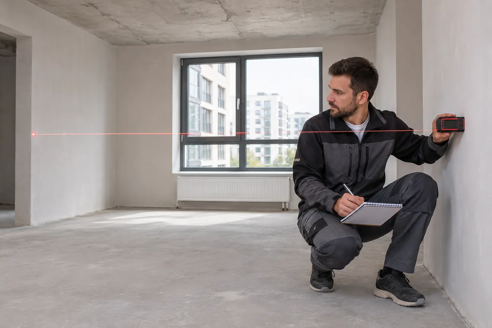

Для дизайнера
Передайте чертёж квартиры специалисту для работы над интерьером.
Подготовим два варианта чертежа квартиры по фактическим замерам: с инженерными сетями и электросетями или без них. Файлы передадим в форматах PDF и DWG.

Передайте чертёж квартиры специалисту для работы над интерьером.
Используйте фактические размеры при разработке планировки перед ремонтом.
Фиксирует результат измерения площади при приёмке. Подробный чертёж квартиры в эту услугу не входит.
Приёмка квартирыОтдельный чертёж квартиры по фактическим замерам.
Заказать обмерный планПо площади квартиры рассчитывается стоимость услуги.
На объекте фиксируются размеры, фотографии и видео.
Подготавливаем варианты чертежа с инженерными сетями и без них.
После проверки клиент получает файлы PDF и DWG.
Электронный чертёж квартиры в AutoCAD по фактическим замерам.
Обмер в составе приёмки фиксирует площадь. Обмерный план AutoCAD — отдельная услуга с подробным чертежом квартиры.
Два варианта: с инженерными сетями и без них. Файлы — PDF и DWG.
120 ₽/м², минимальная стоимость — 7 900 ₽.
Нет. Обмерный план AutoCAD не является кадастровым или техническим планом.
Укажите контакты и площадь квартиры, если знаете метраж.